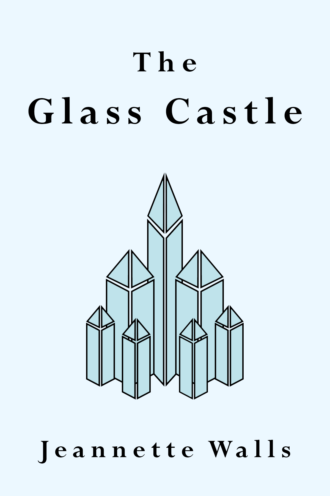
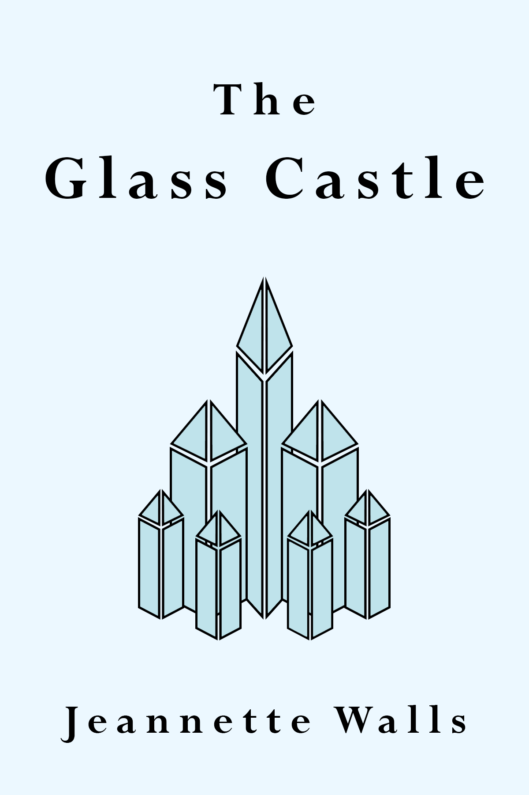
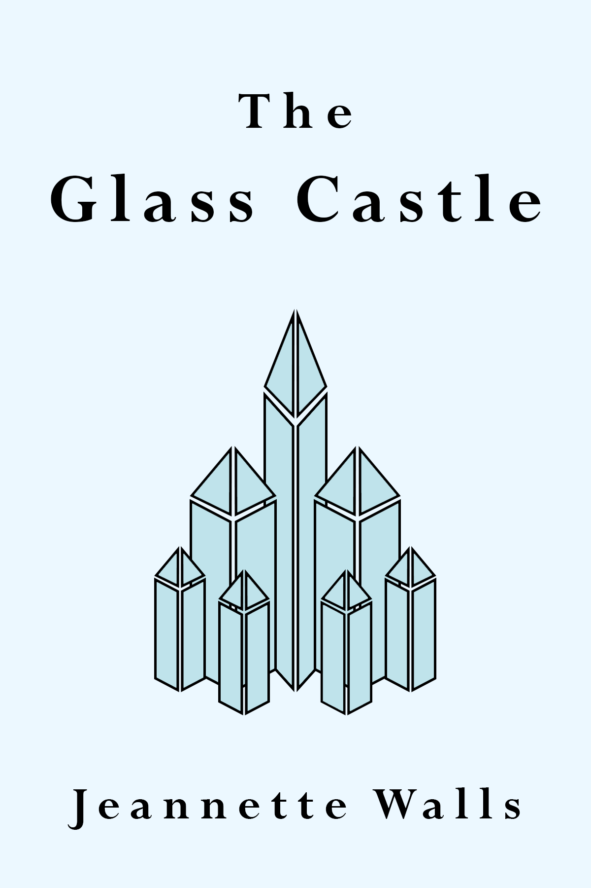
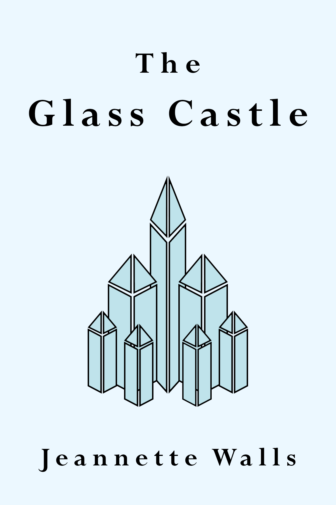

Unlike Mary Karr's The Liars' Club, Walls begins her memoir with a memory from her adulthood. She is in New York City, riding in a taxi, when she gut-wrenchingly recognizes her mother in the face of a homeless woman on the street. Instead of reaching out to her mother, she slinks down in her seat and directs the taxi driver off in the opposite direction. Although she later invites her mother to lunch and they speak about this incident openly, this introduction reeks of the guilt and shame that Walls feels about her family.
The Glass Castle tells the story of Jeannette Walls' tumultuous childhood, moving from town to town with her eclectic family.
Her father, is constantly uprooting his family to do the skedaddle
. Oftentimes, this uprooting is due to evading the law. The book opens
with Jeannette's father breaking her out of the hospital without permission from staff or doctors. This hospital
visit is prefaced with a disturbing account of Jeannette receiving third-degree burns while trying to make hot dogs (at age 3). This first
snippet of Walls' life serves to set up the high degree of independence that was fostered in her home. Her father, in particular,
values utility above all else, and is described as a character that defiantly goes against the grain.
In the first example of the Walls family doing the skeddaddle
, we are shown what we come to realize is a classic example of how they live their lives.
Dad came home in the middle of the night a few months later and roused all of us from bed.Time to pull up stakes and leave this shit-hole behind,he hollered. We had fifteen minutes to gather whatever we needed and pile into the car...For comfort, I tried to cradle Quixote, our gray and white cat who was missing an ear, but he growled and scratched at my face.Quiet, Quixote!I said.Cats don't like to travel,Mom explained. Anyone who didn't like to travel wasn't invited on our adventure, Dad said. He stopped the car, grabbed Quixote by the scruff of his neck, and tossed him out the window. Quixote landed with a screeching meow and a thud, Dad accelerated up the road, and I burst into tears.
Clearly, it is absolutely reasonable for a child to be upset that their family cat has been discarded, especially so unceremoniously.
However, after Walls' mother sees her cry, she says Don't be so sentimental.
These quotes articulate the Walls' family focus on
self-preservation and committment to their way of life.
Walls' memoir is titled after an idea her father promised to her as a child. No one can say that Walls' dad wasn't smart; he most certainly had the ability to get them out of tough situations in a hurry and evade punitive consequences. Based on this smartness, he told his children that all of his skills would culminate in the building of a 'Glass Castle', a huge house he would build in the desert for his family.
It would have a glass ceiling and thick glass walls and even a glass staircase. The Glass Castle would have solar cells on the top that would catch the sun's rays and convert them into electricity for heating and cooling and running all the appliances. It would even have its own water-purification system...[Dad] carried around the blueprints for the Glass Castle wherever we went, and sometimes he'd pull them out and let us work on the design for our rooms.
Both Walls' and Karr's father had a penchant for storytelling and imagination. While Karr's father spun his tales to his buddies
at the bar, Walls' father mainly entertained his family with his stories and whimsy. Due to their impoverished state, Walls' parents
informed their children at an early age that Santa wasn't real, so they wouldn't be disappointed that they didn't get presents like
the other children. Instead, Walls' father stated that she could pick out any star in the sky, and that it would be hers (although she
ends up picking a planet, Venus, instead). Despite this lighthearted gift that the children adore, it is still tinged by scorn towards outsiders.
We laughed about all the kids who believed in the Santa myth and got nothing for Christmas but a bunch of cheap plastic toys. 'Years
from now, when all the junk they got is broken and long forgotten,' Dad said, 'you'll still have your stars'.
This idea of comparison, and of mocking, interests me. I wonder if it is borne out of the need to keep your head up, to